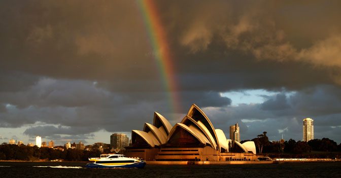

L’Australia è conosciuta come il paese più urbanizzato del mondo, con più grattacieli pro capite, per abitante di qualsiasi altra città. Ma lo sapevate che è anche una delle città più costose del pianeta? Da un indagine del 2014, che ha preso in esame 131 città, è risultato è la quinta città più costosa
Bondi è probabilmente uno dei tratti di sabbia più famosi del mondo, frequentato da nuotatori, surfisti, amanti della tintarella, artisti, attori, magnati dei media e comunità di ogni genere, che rendono questa spiaggia un posto molto vivace. Qui i bagnanti hanno a disposizione gratuitamente barbecue elettrici pubblici gratuiti per organizzare saporiti picnic godendosi il luogo più famoso di Sydney.

La Sydney Opera House è uno degli edifici più famosi e riconoscibili del mondo, patrimonio dell’Umanità dell’UNESCO. Fu progettata dal danese Jorn Utzon he sconfisse altri 232 architetti nella gara per la progettazione del teatro. La sua costruzione fu piuttosto faticosa, perchè non solo il costo di realizzazione passò da 7 a 102 millioni di dollari (quando si dice superare il budget), ma anche perchè richiese 14 anni di lavoro e l’impiego di 100,000 lavoratori edili.